A caesarean section (C-section) is a surgical operation to deliver a calf through an incision in the cow's flank and uterus when normal calving is impossible or unsafe. It is one of the most common emergency surgeries in cattle practice — and one of the most life-saving, for both the cow and the calf.
This guide covers when a C-section is needed, the surgical approaches, the operation step by step, care of the newborn calf, and postoperative management.
What Is a Caesarean Section?
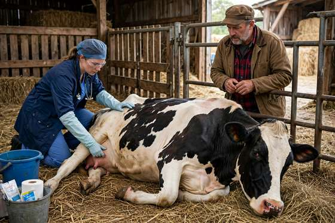
Difficult labour (dystocia) — the main reason for a C-section
A caesarean section (C-section) is a surgical operation to deliver a calf through an incision in the cow's flank and uterus when normal calving is impossible or unsafe. It is one of the most common emergency surgeries in cattle practice — and one of the most life-saving, for both the cow and the calf.
Unlike in many other animals, a C-section in cattle is usually performed on a standing cow under local anaesthesia. The cow is restrained in a crush or chute, the left flank is clipped and scrubbed, and the uterus is reached through a flank incision. Standing surgery avoids the risks of general anaesthesia and keeps the rumen working normally.
When Is a C-Section Needed? (Indications)
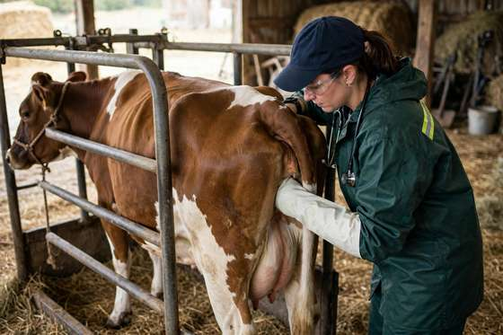
Vaginal examination decides whether a C-section is needed
The decision for a C-section is made after a careful vaginal examination. The veterinarian checks the size of the calf against the pelvis, the position and posture of the calf, whether the calf is alive, and how long labour has lasted. Early decision saves lives — every hour of delay reduces the survival of the calf and increases the risk of infection and uterine damage for the cow.
1
Oversized calf (fetopelvic disproportion)(the calf is too large for the birth canal — common in heifers and with large-breed sires)
2
Malpresentation or malposition(the calf is backwards, sideways, or has a leg or head turned back, and cannot be corrected by hand)
3
Uterine torsion(the uterus has twisted, closing the birth canal; it cannot always be untwisted by rolling the cow)
4
Narrow pelvis(young heifers bred too early, or cows with a deformed pelvis after a fracture)
5
Dead, emphysematous calf(a calf dead for some time becomes swollen with gas and cannot pass through the birth canal)
6
Prolonged dystocia(labour has gone on too long, the cow is exhausted, and traction has failed or is unsafe)
Surgical Approaches
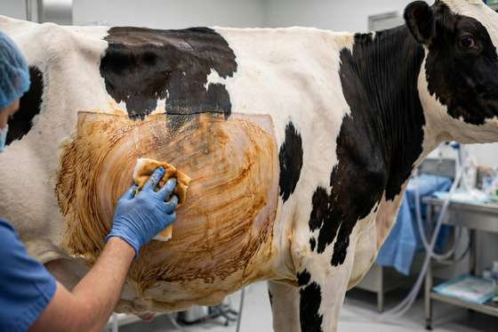
The left flank is the usual surgical site
Three approaches are used, chosen according to the case:
1
Left flank laparotomy (most common)(standing cow, incision in the left flank; fast, safe, good access to the uterus — the standard choice)
2
Right flank laparotomy(used when the pregnant uterus lies more to the right, or when the left flank is damaged)
3
Paramedian approach(incision under the belly with the cow lying down; gives a larger opening for very big calves or a swollen dead calf)
The flank approaches are preferred in the field because the cow stays standing, the wound drains well, and the risk of the abdominal contents pushing out is low. The paramedian approach gives the best access to the uterus but carries a higher risk of wound breakdown and herniation.
The Operation — Step by Step
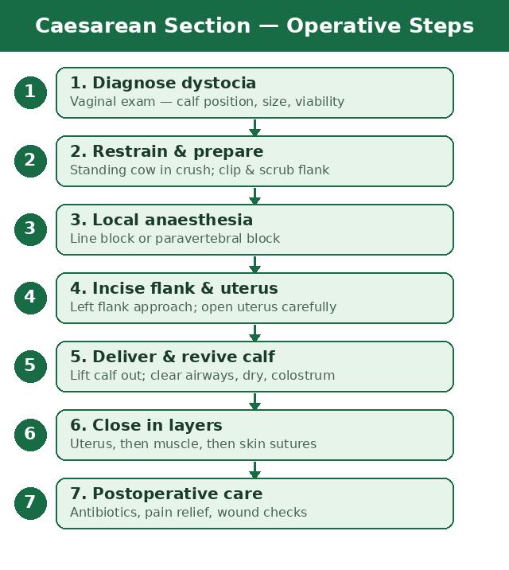
Operative steps of a caesarean section in cattle
1
Diagnose the dystocia(vaginal examination — calf position, size, viability and how long labour has lasted)
2
Restrain and prepare(standing cow in a crush; clip and scrub the flank widely, drape the surgical field)
3
Give local anaesthesia(line block or paravertebral block so the cow feels no pain at the incision)
4
Incise the flank(cut through skin, muscle layers and peritoneum to reach the uterus)
5
Open the uterus and deliver the calf(incise the uterus over the calf's leg, lift the calf out with an assistant)
6
Remove the placenta if loose(remove the afterbirth only if it comes away easily; never force it)
7
Close in layers(suture the uterus in two layers, then muscle, then skin; apply an antiseptic dressing)
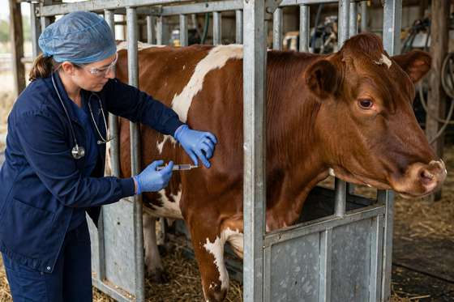
Local anaesthesia — the cow stays standing
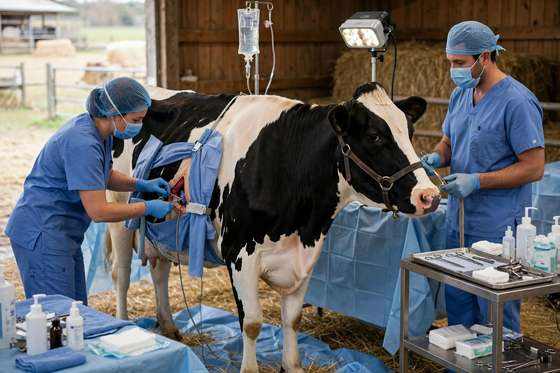
Surgery on the standing cow, under sterile drapes
Important: All surgical procedures must be performed by a qualified veterinarian under proper anaesthesia and aseptic conditions. Never attempt surgery on your own animals — incorrect technique causes infection, suffering and death.
Delivering and Reviving the Calf
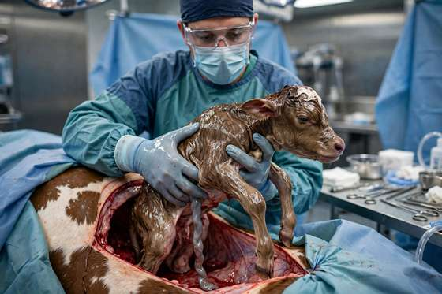
The calf is lifted out gently
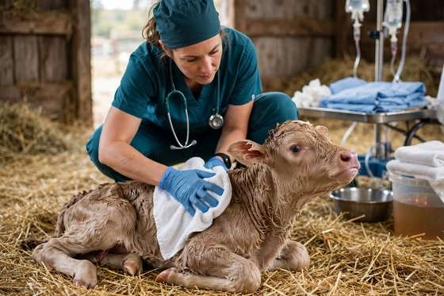
Drying and stimulating the newborn calf
The newborn calf needs immediate attention. A calf delivered by C-section has not had the normal squeeze of the birth canal, so fluid may remain in its airways.
1
Clear the airways(hold the calf's head down briefly, wipe fluid from the mouth and nose, and tickle the nostrils to start breathing)
2
Stimulate and dry(rub the calf vigorously with clean towels — this warms it and stimulates breathing)
3
Disinfect the navel(dip the navel cord in antiseptic to prevent navel infection (navel ill))
4
Feed colostrum early(give good-quality colostrum within 2 hours of birth — it provides antibodies the calf cannot live without)
5
Keep the calf warm(in cold weather, dry the calf fully and provide warm, dry bedding)
Closing the Wound
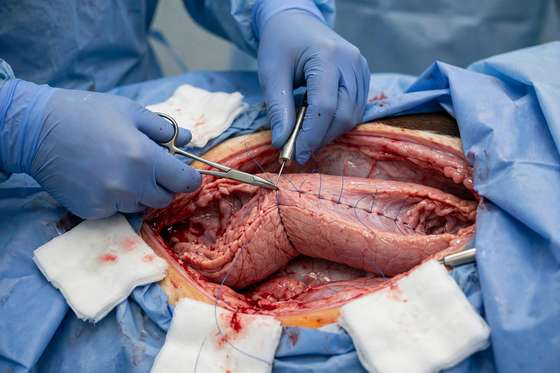
The uterus is sutured in two layers
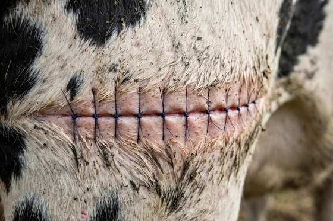
Neat skin closure on the flank
Closure is done in layers. The uterus is closed with two layers of absorbable suture, taking care to bury the first layer so that no suture material is exposed inside the uterus. The muscle layers are closed with absorbable sutures, and the skin with strong non-absorbable sutures that are removed after 10 to 14 days. An antiseptic dressing protects the wound.
Postoperative Care
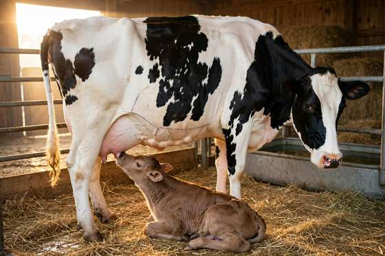
Cow and calf together after a successful C-section
1
Give medicines as prescribed(complete the full course of antibiotics and pain relief given by the veterinarian)
2
Check the temperature daily(fever above 39.5°C, loss of appetite or a foul-smelling discharge means infection — call the veterinarian)
3
Inspect the wound daily(look for swelling, redness, discharge or broken sutures)
4
Watch for retained placenta(if the afterbirth has not passed within 12 hours, the veterinarian must be informed)
5
Milk the cow normally(regular milking helps the uterus contract and return to normal size)
6
Provide good feed and water(fresh water and good-quality fodder help the cow recover and produce milk)
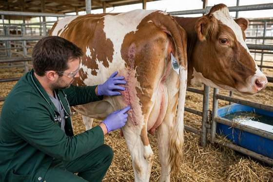
Daily wound and temperature checks
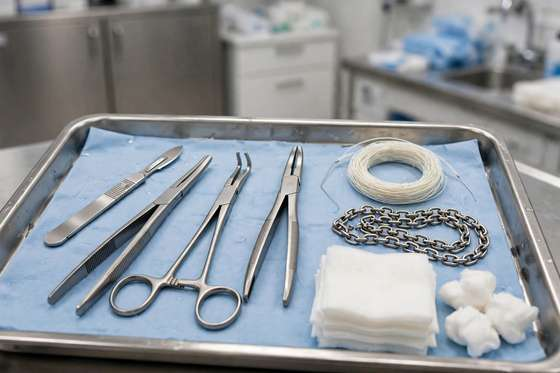
A prepared C-section kit saves time in an emergency
Complications
1
Wound infection(the most common complication — swelling, discharge and pain at the incision)
2
Retained fetal membranes(the afterbirth does not pass; it may need veterinary treatment, never pull it out by force)
3
Metritis(infection of the uterus — fever, foul discharge and reduced milk; needs veterinary treatment)
4
Peritonitis(infection inside the abdomen — a serious complication with fever, pain and a stiff abdomen)
5
Adhesions(internal scar tissue that can reduce fertility and cause pain)
6
Reduced fertility(some cows take longer to breed again, especially after infection)
⚠ Important Tips:
Watch every calving closely — call the veterinarian if there is no progress within 1 hour of strong labour.
Never use excessive force with a calving jack — it injures the cow and the calf.
Breed heifers at the right age and weight, and use a sire known for easy calving.
Keep a clean, dry calving pen ready — hygiene at calving prevents most infections.
Record every C-section — cows with a repeat dystocia may need a planned C-section next time.
Frequently Asked Questions
What is a caesarean section in cattle?
A caesarean section (C-section) is a surgical operation to deliver a calf through an incision in the cow's flank and uterus, when normal calving is impossible or unsafe. In cattle it is usually done on a standing cow under local anaesthesia, through the left flank. It is one of the most common emergency surgeries in cattle practice.
When is a C-section needed in a cow?
A C-section is needed when the calf cannot be delivered through the birth canal: an oversized calf, a malpresentation that cannot be corrected, uterine torsion, a narrow pelvis in a heifer, a dead and swollen calf, or prolonged dystocia after failed traction. The decision should be made early — delay reduces the survival of both cow and calf.
Which surgical approach is used for a C-section in cattle?
The most common approach is a left flank laparotomy on the standing cow — it is fast, safe, and gives good access to the uterus. A right flank approach is used when the uterus is displaced to the right. A paramedian approach (under the belly, with the cow lying down) is chosen for very large calves or a dead, emphysematous calf, where a bigger opening is needed.
How is the calf delivered during a caesarean section?
After the uterus is opened, the surgeon grasps the calf's legs or head and lifts it out gently, often with an assistant. The calf's airways are cleared of fluid, breathing is stimulated by rubbing and tickling the nostrils, the calf is dried, the navel is disinfected, and colostrum is fed as soon as possible — ideally within two hours of birth.
What are the risks and complications of a C-section in cattle?
The main risks are wound infection, retained fetal membranes, metritis (uterine infection), peritonitis, adhesions inside the abdomen, and reduced fertility afterwards. Most cows recover well with proper antibiotics, pain relief and wound care. The risk rises sharply when surgery is delayed or done in dirty field conditions.
Can a cow get pregnant again after a C-section?
Yes, most cows can breed again after a C-section, usually after a rest of at least 60 days. Fertility may be slightly lower if there was infection or adhesions. The veterinarian should check the uterus before breeding, and the next calving should be watched closely — a repeat C-section is sometimes needed.
How long does a cow take to recover after a C-section?
Most cows are eating and standing comfortably within a day. The wound heals in about 10 to 14 days, when the skin sutures are removed. Full recovery takes about 3 to 4 weeks. Watch the wound daily, check the temperature for fever, and call the veterinarian if there is discharge, swelling or loss of appetite.
گائے میں سی سیکشن (آپریشن) کب ضروری ہوتا ہے؟
جب بچھڑا عام طریقے سے پیدا نہ ہو سکے تو سی سیکشن ضروری ہوتا ہے — جیسے بچھڑا بہت بڑا ہو، بچھڑے کی پوزیشن ٹھیک نہ ہو، بچہ دانی مڑ جائے، یا دیر تک زچگی کے باوجود بچھڑا نہ نکلے۔ یہ آپریشن کھڑی گائے پر مقامی بے ہوشی سے کیا جاتا ہے۔ فیصلہ جلدی کرنا چاہیے کیونکہ دیر سے گائے اور بچھڑے دونوں کی جان کو خطرہ ہوتا ہے۔
Key Takeaway
A caesarean section saves the cow and the calf when normal calving is impossible — but only if the decision is made early. Watch every calving, call the veterinarian at the first sign of trouble, and never use force. With clean surgery and careful aftercare, most cows recover fully and breed again.